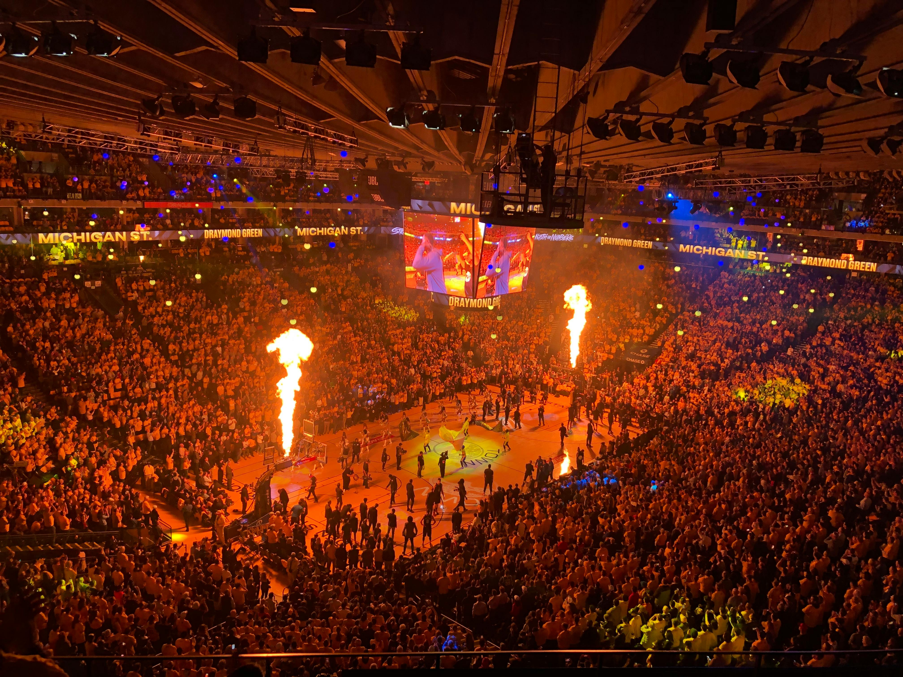

Basquete

O Basquete é um esporte coletivo que consiste em dois times de 5 jogadores cada. Os times são divididos em 5 posições, sendo elas o Armador, o Ala-Armador, o Ala, o Ala-Pivô e o Pivô. Cada um tem uma função específica, mas podem também exercer outras de outras posições.

Aquecimento
Assim como em todo esporte, ao praticar Basquete você precisa se alongar com exercícios que ativem os músculos, melhorem a mobilidade e aumentem a temperatura temporal.
Atletas profissionais costumam dividir o aquecimento em:
- Corridas Leves: Corra em volta da quadra para elevar o ritmo cardíaco.
- Saltos com polichinelos: Ativam os braços e pernas, aumentando a circulação.
- Mobilidade Articular: Realize movimentos circulares nos tornozelos, joelhos, quadris e ombros para preparar as articulações.